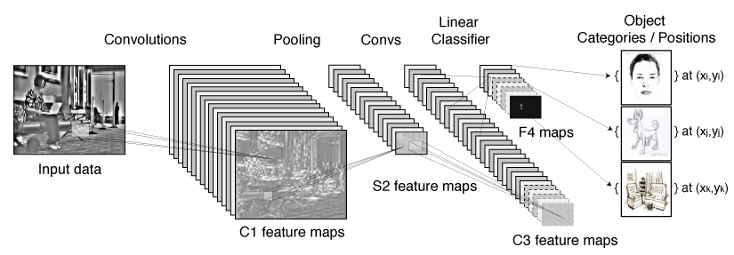

Projet: Reconnaissance d'Objets avec Réseaux de Neurones à Convolution

Responsable
Hugo Larochelle
Description
Les réseaux de neurones à convolution forment une
excellente approche d'apprentissage automatique pour la
reconnaissance et détection d'objet. Google utilise
d'ailleurs une telle approche afin de détecter les visages
et plaques d'immatriculations dans les images de son
service Google Streetview.
L'objectif de ce projet est d'implémenter un système de
reconnaissance d'objet basé sur un réseau de neurones à
convolution. Ce projet nécessitera:
- le développement de diverses variantes de réseaux à convolution
- l'implémentation d'une plateforme flexible pour
l'acquisition d'images étiquetées, e.g. à l'aide d'une
webcam
- la mise en place et l'exécution d'un protocole d'expérimentation valide
- l'intégration d'un support pour le calcul sur une carte graphique (optionnel)
L'implémentation se fera en Python/C++ et devra être intégrée à une librairie existante d'apprentissage automatique, développée par Hugo Larochelle.
Références sur internet
Article de
The Economist sur les réseaux à convolution:
http://www.economist.com/node/17305316
Tutoriel sur les réseaux à convolution à l'aide de la librairie Theano:
http://deeplearning.net/tutorial/lenet.html
Contact
hugo.larochelle [at] usherbrooke.ca